| Instance/source | Role | Heading | Relative yaw | World yaw | Local X/Y tilt | Pivot | Override |
|---|---|---|---|---|---|---|---|
| instance-0 / 0 L | terrace | 7.59 | 45.00 | 52.59 | 0 / 0 | 1.02, -1.02, 0.99 | true |
| instance-1 / 1 U | enclosure | 7.59 | 45.00 | 52.59 | 0 / 0 | 0.19, 0.16, 3.51 | true |
| instance-2 / 2 V | transition | 7.59 | 45.00 | 52.59 | 90 / 0 | -0.75, 2.20, 6.03 | true |
| instance-3 / 3 L | terrace | 7.59 | 45.00 | 52.59 | 0 / 0 | -0.18, 0.03, 8.55 | true |
| instance-4 / 4 U | enclosure | 7.59 | 45.00 | 52.59 | 0 / 0 | 1.13, -0.59, 11.07 | true |
| instance-5 / 5 V | transition | 7.59 | 45.00 | 52.59 | 90 / 0 | -2.17, 0.63, 13.59 | true |
| instance-6 / 0 L | terrace | 7.59 | 45.00 | 52.59 | 0 / 0 | -1.60, -1.55, 16.11 | true |
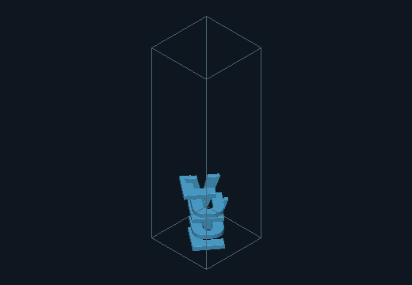
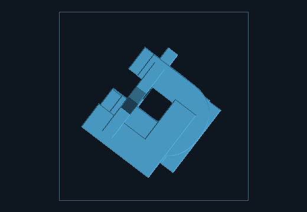
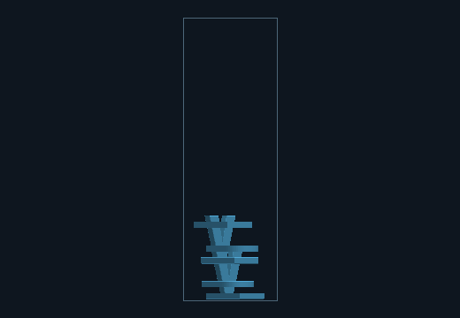
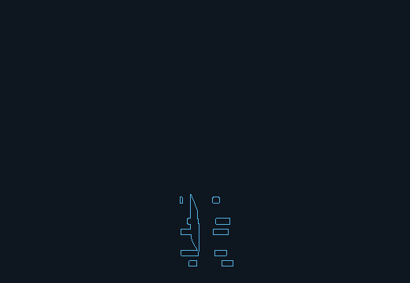
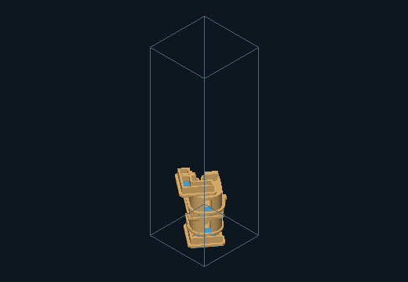
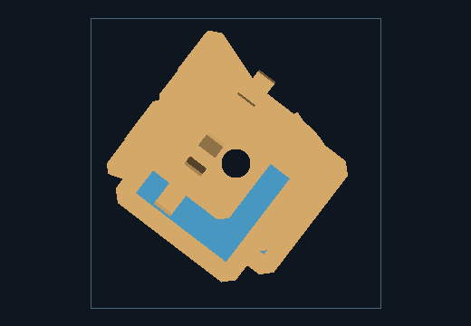
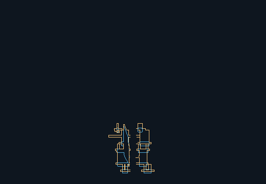
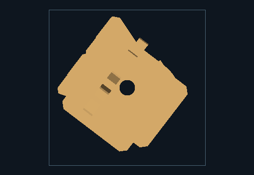
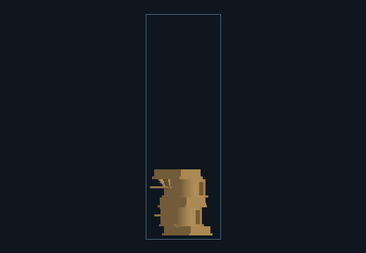
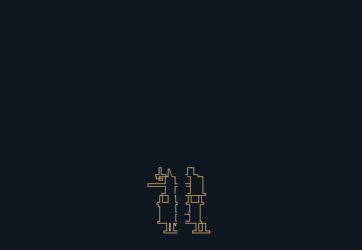
| Instance/source | Role | Heading | Relative yaw | World yaw | Local X/Y tilt | Pivot | Override |
|---|---|---|---|---|---|---|---|
| instance-0 / 0 L | terrace | 7.59 | 0.00 | 7.59 | 0 / 0 | -0.00, -1.76, 1.21 | false |
| instance-1 / 1 U | enclosure | 7.59 | 15.00 | 22.59 | 0 / 0 | 0.31, -0.03, 4.29 | false |
| instance-2 / 2 V | transition | 7.59 | 15.00 | 22.59 | 90 / 0 | 0.55, 2.71, 7.37 | false |
| instance-3 / 3 L | terrace | 7.59 | 45.00 | 52.59 | 0 / 0 | -0.17, 0.06, 10.45 | false |
| instance-4 / 4 U | enclosure | 7.59 | 90.00 | 97.59 | 0 / 0 | 1.59, 0.20, 13.53 | false |
| instance-5 / 5 V | transition | 7.59 | 30.00 | 37.59 | 90 / 0 | -2.69, 0.60, 16.61 | false |
| instance-6 / 0 L | terrace | 7.59 | 15.00 | 22.59 | 0 / 0 | -2.24, -1.10, 19.69 | false |
| instance-7 / 1 U | enclosure | 7.59 | 30.00 | 37.59 | 0 / 0 | 0.50, -0.88, 22.77 | false |
| instance-8 / 2 V | transition | 7.59 | 45.00 | 52.59 | 90 / 0 | 0.80, -2.62, 25.85 | false |
| instance-9 / 3 L | terrace | 7.59 | 90.00 | 97.59 | 0 / 0 | 2.33, -1.75, 28.93 | false |
| instance-10 / 4 U | enclosure | 7.59 | 0.00 | 7.59 | 0 / 0 | 0.24, 0.04, 32.01 | false |
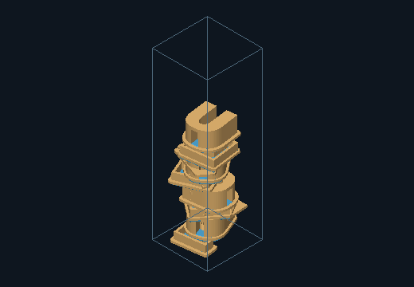


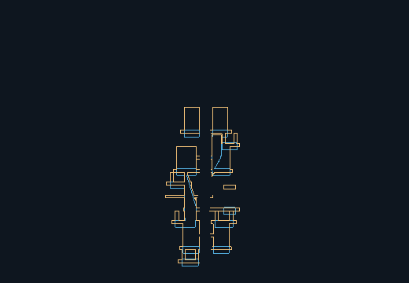
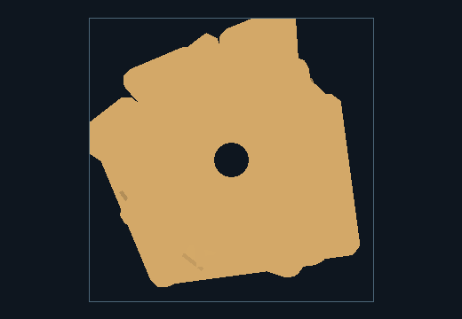
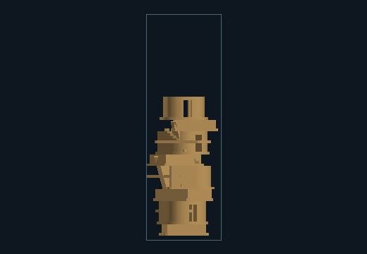
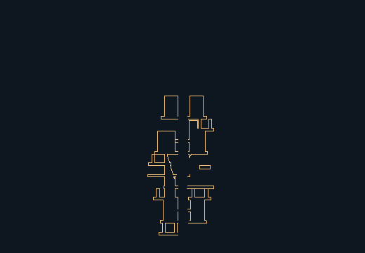
| Instance/source | Role | Heading | Relative yaw | World yaw | Local X/Y tilt | Pivot | Override |
|---|---|---|---|---|---|---|---|
| instance-0 / 0 L | terrace | 7.59 | 0.00 | 7.59 | 0 / 0 | -0.54, -2.01, 1.43 | false |
| instance-1 / 1 U | enclosure | 7.59 | 15.00 | 22.59 | 0 / 0 | 0.34, -0.12, 5.07 | false |
| instance-2 / 2 V | transition | 7.59 | 15.00 | 22.59 | 90 / 0 | 0.63, 3.11, 8.71 | false |
| instance-3 / 3 L | terrace | 7.59 | 45.00 | 52.59 | 0 / 0 | -0.22, -0.02, 12.35 | false |
| instance-4 / 4 U | enclosure | 7.59 | 90.00 | 97.59 | 0 / 0 | 1.85, 0.15, 15.99 | false |
| instance-5 / 5 V | transition | 7.59 | 30.00 | 37.59 | 90 / 0 | -3.19, 0.61, 19.63 | false |
| instance-6 / 0 L | terrace | 7.59 | 0.00 | 7.59 | 0 / 0 | -2.16, -1.19, 23.27 | false |
| instance-7 / 1 U | enclosure | 7.59 | 30.00 | 37.59 | 0 / 0 | 1.03, -1.78, 26.91 | false |
| instance-8 / 2 V | transition | 7.59 | 30.00 | 37.59 | 90 / 0 | 0.31, -3.73, 30.55 | false |
| instance-9 / 3 L | terrace | 7.59 | 90.00 | 97.59 | 0 / 0 | 1.79, -2.27, 34.19 | false |
| instance-10 / 4 U | enclosure | 7.59 | 0.00 | 7.59 | 0 / 0 | 0.21, -0.92, 37.83 | false |
| instance-11 / 5 V | transition | 7.59 | 15.00 | 22.59 | 90 / 0 | 1.99, 3.83, 41.47 | false |
| instance-12 / 0 L | terrace | 7.59 | 15.00 | 22.59 | 0 / 0 | -0.59, -0.53, 45.11 | false |
| instance-13 / 1 U | enclosure | 7.59 | 0.00 | 7.59 | 0 / 0 | -0.21, 1.51, 48.75 | false |
| instance-14 / 2 V | transition | 7.59 | 90.00 | 97.59 | 90 / 0 | -3.44, 1.83, 52.39 | false |
| instance-15 / 3 L | terrace | 7.59 | 0.00 | 7.59 | 0 / 0 | -1.99, 0.34, 56.03 | false |
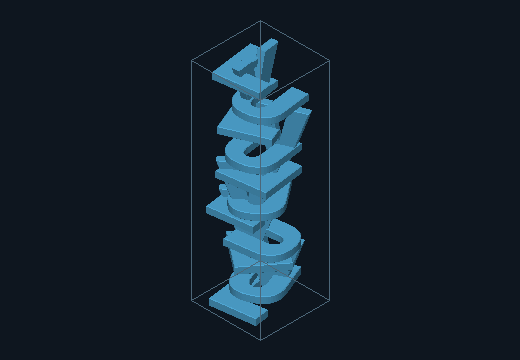
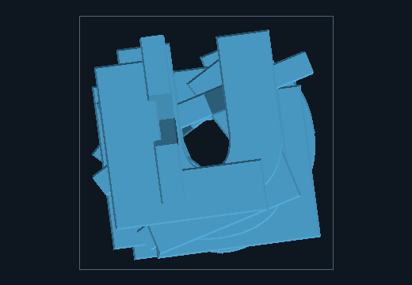


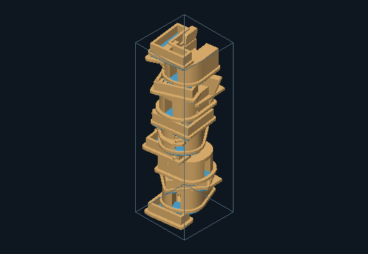
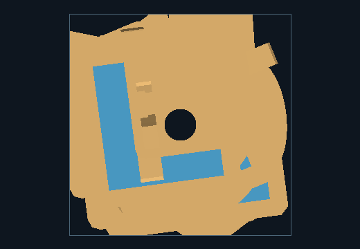
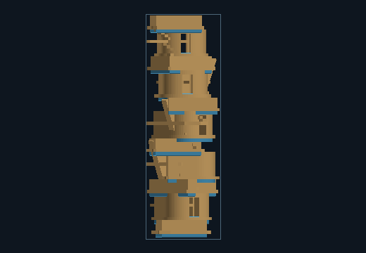
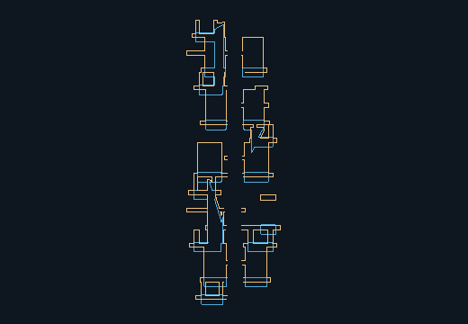
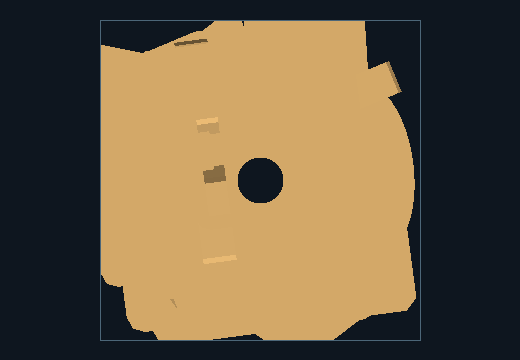
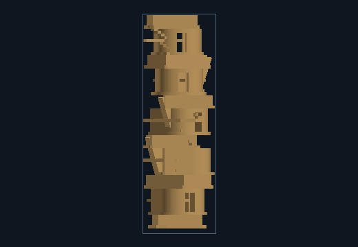
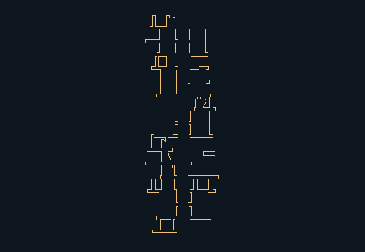